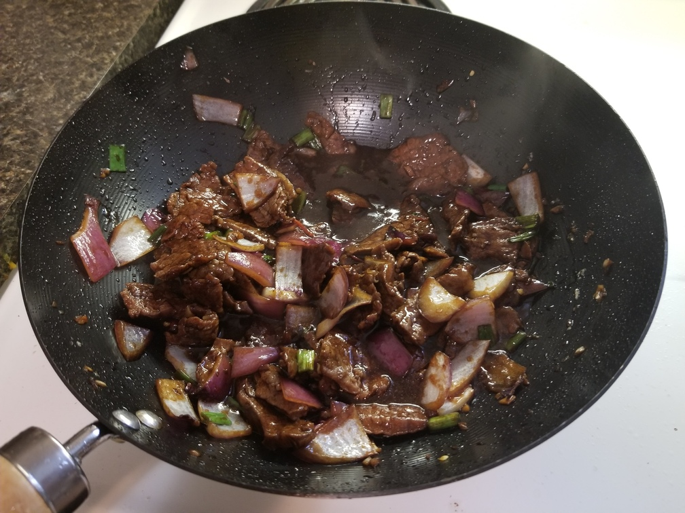
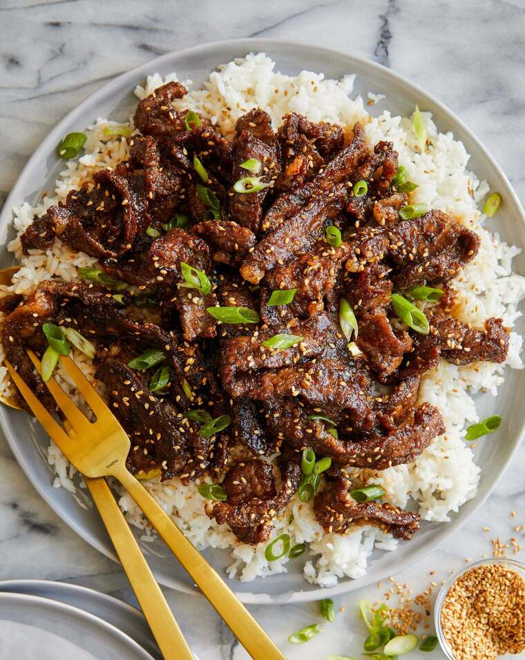

Mongolian Beef
Homepage
A simple yet delicious beef stir fry featuring flank steak, red onions, and brocolli!
Ingredients:
*Note: Ingredient quantities are approximate, I suggest trying to match
the amounts the first time you try the recipe then adjust to your liking thereafter
Optional:
- Thai Chilli Peppers, seeds removed, sliced
- Sesame Seeds
- Green Onion, sliced thin
Required:
- 0.5lb Flank Steak, sliced thin against the grain
- Cooking Fat (e.g. Olive Oil, Ghee, Beef Talow)
- 1 Large Red Onion, chop to preferred size (medium recommended)
- 3-6 Cloves Garlic, minced
- 1-2 Cups Brocolli or brocollini, stalks removed, sliced
- 1 Thumb Ginger, minced
- 1-2 Tablespoons Cornstarch
For the sauce:
- 1/4 Cup Soy Suace
- 2 Tablespoons Brown Sugar
- 1 Tablespoon Cornstarch
Instructions
- Take the thinly sliced beef and mix with cornstarch for at least 15 minutes before frying.
- While you are waiting make the sauce in a small bowl by mixing the soy sauce, brown sugar,
and cornstarch together in a small bowl.
- Heat up a pan or wok with the fat over medium-high heat.
- Cook the beef in batches until brown, do not crowd the beef or the meat will steam instead of
browning properly. Add more fat as needed.
- Remove the beef once all pieces are sufficiently browned, add more oil and add in
- Turn the heat up to high. Once the fat starts to smoke dd the brocolli slice and the
chopped red onion, cook until soft (should only take a minute or 2). Stir occasionally.
The red peppers can also be added here if you like it spicy.
- Turn the heat back down to medium and add the garlic and ginger, cook until fragrant (30 seconds
or so).

- Add the sauce and boil down to a thick consistency. If the sauce is not thickening, mix
a bowl with 1 tablespoon cornstarch and 1 tablespoon water and add slowly while stirring.
- Remove from the heat and serve, add sesame seeds and green onion. Best served over rice!

(image found online I don't have any pictures of the final product :/)
Homepage